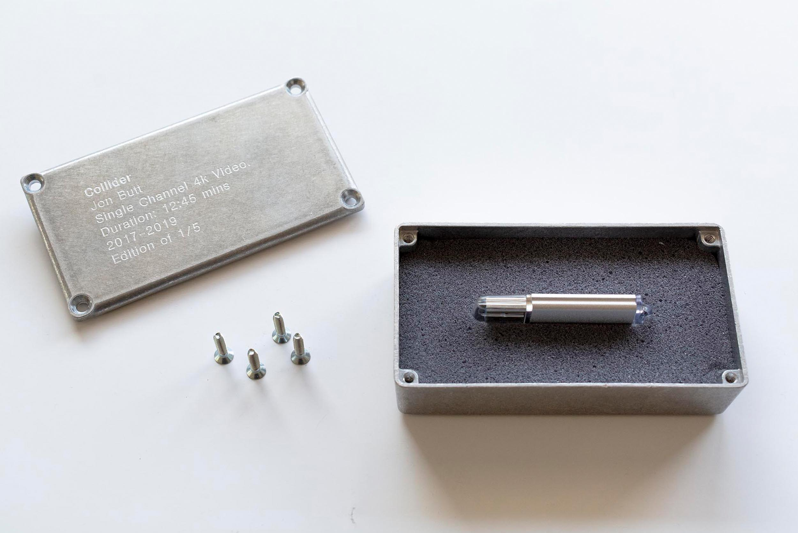
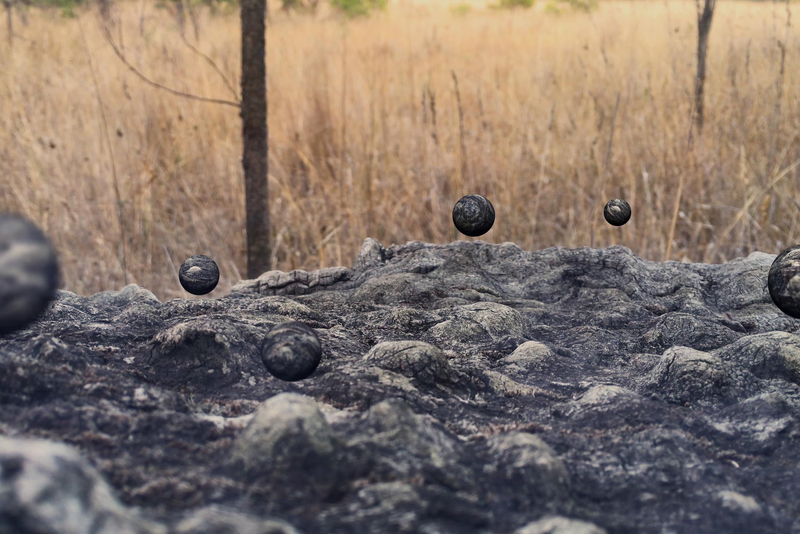
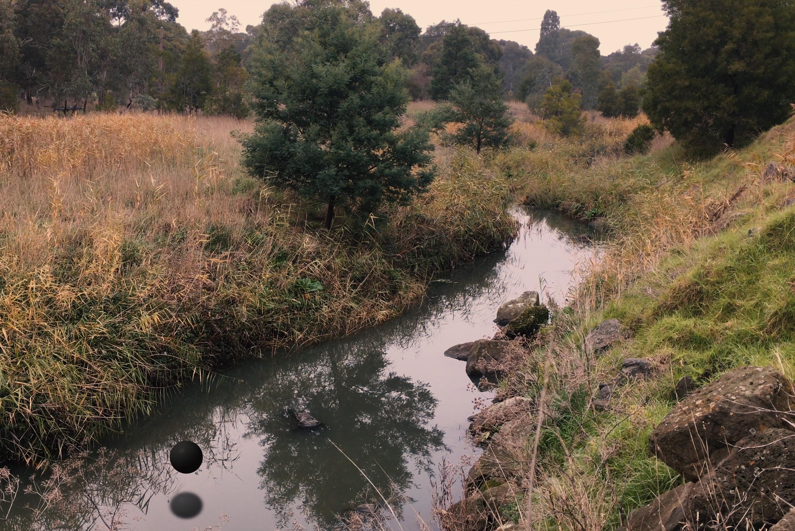
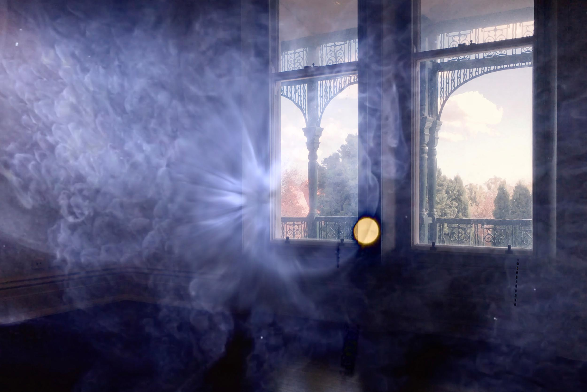
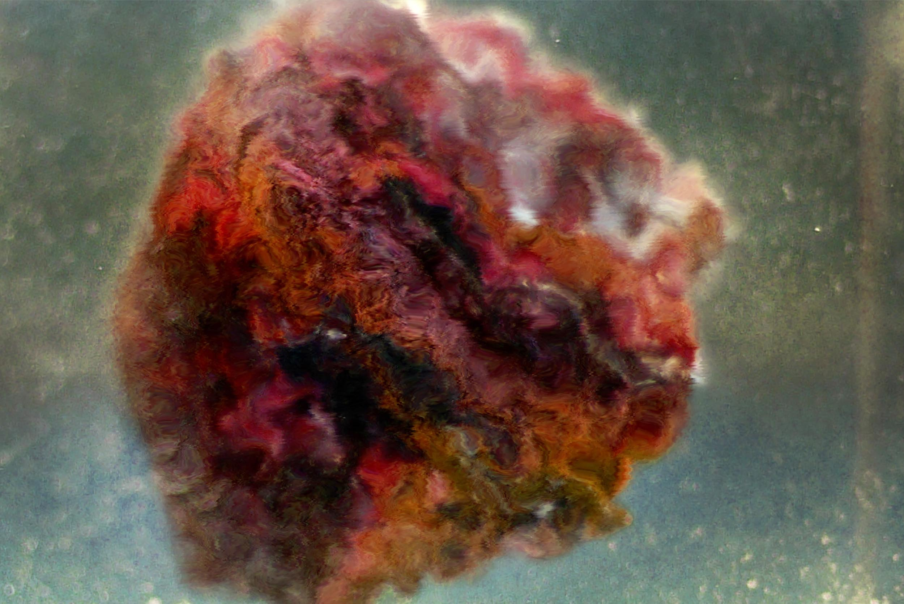
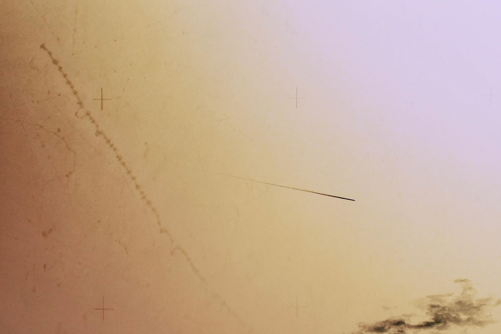
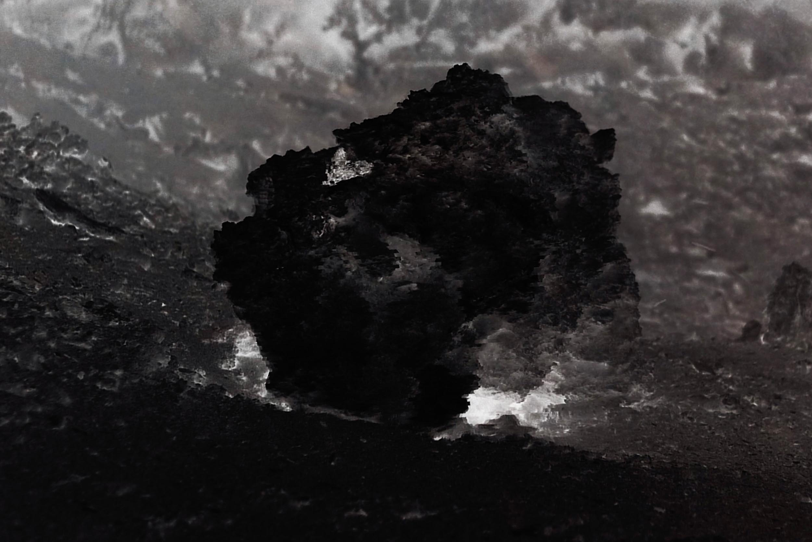

Archive / Moving image
Collider
- When
- 2019
- Venue
- Bundoora Homestead Art Centre
- Work
- Site-responsive moving image
- Related
- Artist talk with Katie Paine
Project statement
Collider is a video site-response work that investigates the physical and conceptual notions of landscape as matter and phenomena.

Artist statement
Space felt rather than understood.
Using video sequences, this work places the Bundoora Homestead site within a shifting scale of material territories, molecular energies and entropic disorder. Collider includes both abstracted and live video sequences shot throughout the Homestead grounds and across Bundoora Park and the Mt Cooper area, appearing to capture unknown signalling phenomena.
The work depicts time, space and place where the idea of a site is viewed as both poetic and quantum. Locations float and revolve with a sense of shifting dimensionality, containing endless physical potential. Objects transmit or receive signals of unknown significance, referencing terrestrial and extra-terrestrial landscapes and mindscapes.






